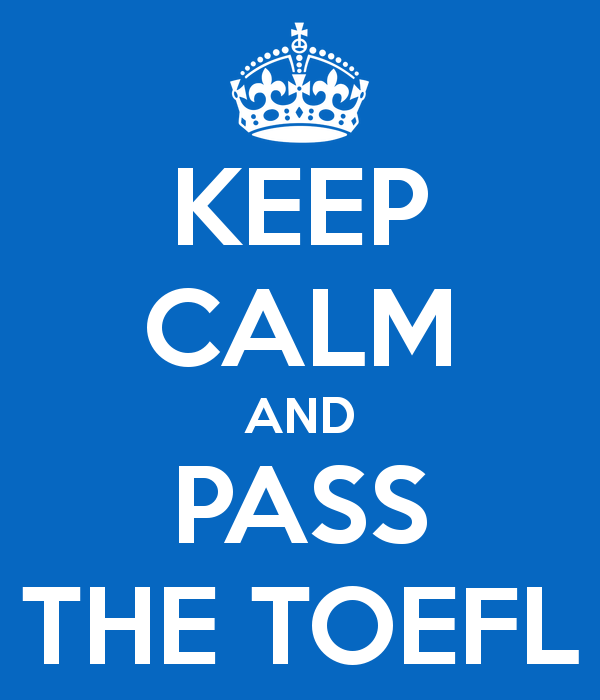

TOEFL (Test Of English as a Foreign Language) - разработан в США, администрируется компанией Educational Testing Service (ETS). Требуется для поступления в университеты Европы, США, Канады, Азии. Данный экзамен, как правило, предпочитают кандидаты, изучавшие американский английский. Есть две версии экзамена. Первая - TOEFL ITP, которую часто называют Computer-based Test или TOEFL СBT. В большинстве случаев университеты требуют дополнить этот экзамен результатами TWE (Test Of Written English). Вторая - Internet-based Test или TOEFL iBT. Регистрация кандидатов - на официальном сайте экзамена, прохождение теста - в аккредитованном центре.
